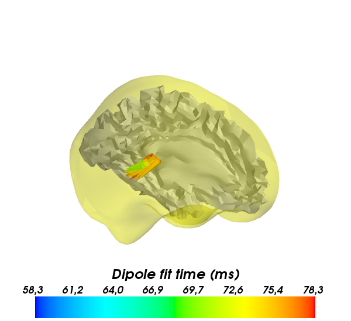

Here the .dip file was generated with the mne_dipole_fit command.
Detailed unix command is :
$mne_dipole_fit –meas sample_audvis-ave.fif –set 1 –meg –tmin 40 –tmax 95 –bmin -200 –bmax 0 –noise sample_audvis-cov.fif –bem ../../subjects/sample/bem/sample-5120-bem-sol.fif –origin 0:0:40 –mri sample_audvis-meg-oct-6-fwd.fif –dip sample_audvis_set1.dip
Script output:
Time (ms): [ 40. 41.7 43.3 45. 46.7 48.3 50. 51.7 53.3 55. 56.6 58.3
60. 61.6 63.3 65. 66.6 68.3 70. 71.6 73.3 75. 76.6 78.3
80. 81.6 83.3 85. 86.6 88.3 89.9 91.6 93.3 94.9]
Amplitude (nAm): [ 16.363 7.204 6.303 7.55 7.152 7.335 17.149 17.414 22.821
26.929 31.679 36.107 38.481 44.182 45.16 48. 50.67 55.408
62.07 55.22 63.754 56.347 56.665 60.992 69.343 55.832 60.594
54.541 52.57 34.17 37.244 39.864 41.987 46.065]
GOF (%): [ 14.1 12.7 13.6 15.4 14.6 18.9 25.6 32.2 38.2 43.8 48.2 51.3
54.7 56.8 58.1 59.4 59.9 60. 60.9 60.5 59.8 58. 55.1 51.3
46.2 42.5 37.5 33.3 29.1 31.2 35.6 39.8 43.7 47. ]
Python source code: plot_dipole_fit_result.py
# Author: Alexandre Gramfort <alexandre.gramfort@telecom-paristech.fr>
#
# License: BSD (3-clause)
print(__doc__)
import numpy as np
import mne
from mne.datasets import sample
data_path = sample.data_path()
fwd_fname = data_path + '/MEG/sample/sample_audvis-meg-oct-6-fwd.fif'
dip_fname = data_path + '/MEG/sample/sample_audvis_set1.dip'
bem_fname = data_path + '/subjects/sample/bem/sample-5120-bem-sol.fif'
brain_surface = mne.read_bem_surfaces(bem_fname, add_geom=True)[0]
points = brain_surface['rr']
faces = brain_surface['tris']
fwd = mne.read_forward_solution(fwd_fname)
src = fwd['src']
# read dipoles
time, pos, amplitude, ori, gof = mne.read_dip(dip_fname)
print("Time (ms): %s" % time)
print("Amplitude (nAm): %s" % amplitude)
print("GOF (%%): %s" % gof)
# only plot those for which GOF is above 50%
pos = pos[gof > 50.]
ori = ori[gof > 50.]
time = time[gof > 50.]
###############################################################################
# Show result on 3D source space
try:
from enthought.mayavi import mlab
except:
from mayavi import mlab
lh_points = src[0]['rr']
lh_faces = src[0]['use_tris']
mlab.figure(size=(600, 600), bgcolor=(1, 1, 1), fgcolor=(0, 0, 0))
# show brain surface after proper coordinate system transformation
points = brain_surface['rr']
faces = brain_surface['tris']
coord_trans = fwd['mri_head_t']['trans']
points = np.dot(coord_trans[:3,:3], points.T).T + coord_trans[:3,-1]
mlab.triangular_mesh(points[:, 0], points[:, 1], points[:, 2],
faces, color=(1, 1, 0), opacity=0.3)
# show one cortical surface
mlab.triangular_mesh(lh_points[:, 0], lh_points[:, 1], lh_points[:, 2],
lh_faces, color=(0.7, ) * 3)
# show dipole as small cones
dipoles = mlab.quiver3d(pos[:,0], pos[:,1], pos[:,2],
ori[:,0], ori[:,1], ori[:,2],
opacity=1., scale_factor=4e-4, scalars=time,
mode='cone')
mlab.colorbar(dipoles, title='Dipole fit time (ms)')
# proper 3D orientation
mlab.get_engine().scenes[0].scene.x_plus_view()
Total running time of the example: 0 seconds